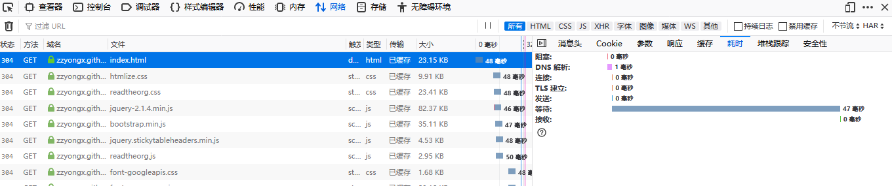

分析网站的TTFB
1 优化TTFB之前
使用 Google 网页性能优化工具 或 pingdom 等工具测试网站性能，优先优化这些工具反应的问题。sitespeed.io 是一款类似工具，可以私有化部署。
2 TTFB
TTFB 即 Time To First Byte ，是客户端从发出请求到接受到响应第一个字节的间隔时间。这个比 首屏 时间更容易度量。TTFB通常由 连接时间 和 服务响应时间 两部分组成。
3 度量
3.1 使用curl
curl -Ss -o /dev/null -w "Connect: %{time_connect} TTFB: %{time_starttransfer} Total time: %{time_total} \n" https://zzyongx.github.io/blogs/index.html 输出
Connect: 0.120465 TTFB: 0.494665 Total time: 0.614249
3.2 使用浏览器DevTool
以firefox为例，这里从 Timings 查到耗时的详细解释。 